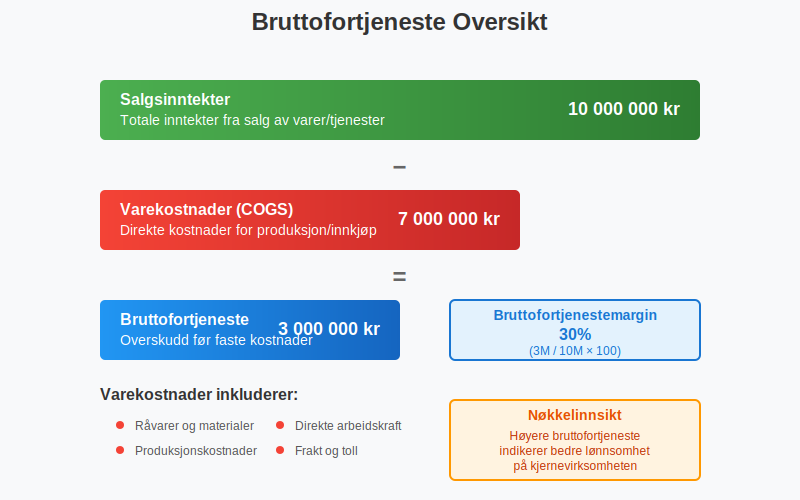
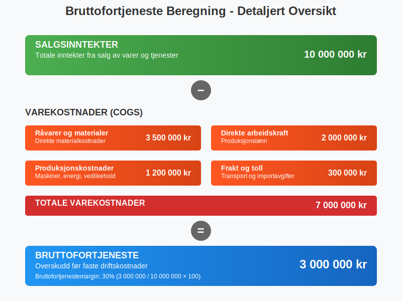
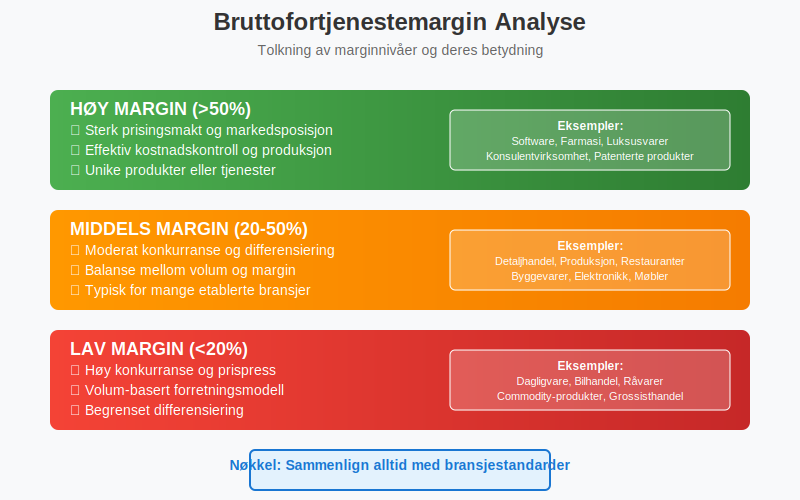
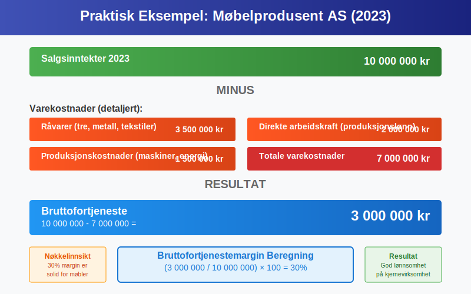
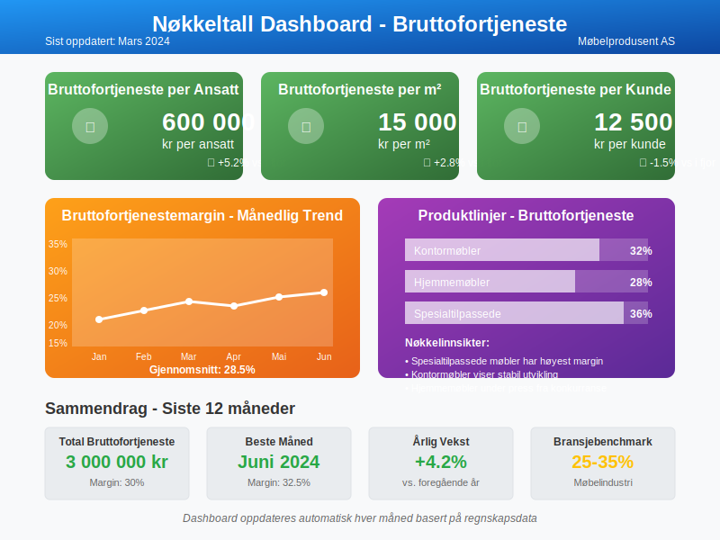
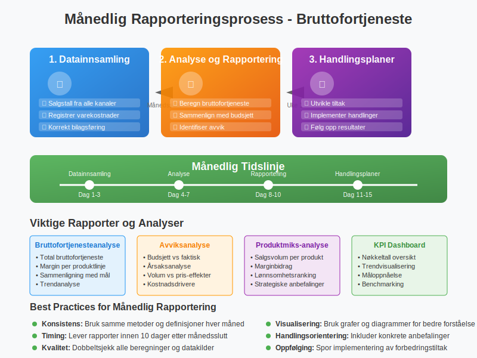

Bruttofortjeneste er et av de mest fundamentale nøkkeltallene i regnskap og finansiell analyse. Som en del av bruttobegrepet i regnskapet, representerer den forskjellen mellom bedriftens driftsinntekter og de direkte kostnadene knyttet til produksjon eller innkjøp av varene som selges. Bruttofortjeneste viser bedriftens evne til å generere profitt på kjernevirksomheten før faste kostnader som lønn, husleie og andre driftskostnader trekkes fra.

Definisjon og Grunnleggende Forståelse
Bruttofortjeneste, også kalt bruttomargin eller varesalgsresultat, beregnes ved å trekke varekostnader (cost of goods sold - COGS) fra salgsinntektene. Dette gir et mål på hvor mye bedriften tjener på hver krone solgt før andre kostnader tas i betraktning.
Formelen for Bruttofortjeneste
Bruttofortjeneste = Salgsinntekter - Varekostnader
Varekostnadene inkluderer alle direkte kostnader knyttet til produksjon eller innkjøp av varene som selges:
- Råvarer og materialer
- Direkte arbeidskraft (produksjonslønn)
- Produksjonskostnader (maskiner, energi til produksjon)
- Innkjøpspris for handelsvarer
- Frakt og toll på innkjøpte varer

Bruttofortjeneste vs. Nettoresultat
Det er viktig å skille mellom bruttofortjeneste og nettoresultat. Mens bruttofortjeneste kun ser på direkte kostnader, inkluderer nettoresultatet alle bedriftens kostnader og inntekter. For en omfattende forståelse av alle typer profitt og hvordan de henger sammen, anbefaler vi å lese vår detaljerte guide om profitt.
Sammenligning av Resultatnivåer
| Resultatnivå | Beregning | Hva det viser |
|---|---|---|
| Salgsinntekter | Totale inntekter fra salg | Bedriftens omsetning |
| Bruttofortjeneste | Salgsinntekter - Varekostnader | Profitt på kjernevirksomhet |
| Driftsresultat | Bruttofortjeneste - Driftskostnader | Profitt av ordinær drift |
| Nettoresultat | Driftsresultat - Finanskostnader - Skatt | Endelig overskudd til eiere |
Bruttofortjenestemargin - Prosentvis Analyse
Bruttofortjenestemargin uttrykker bruttofortjeneste som en prosentandel av salgsinntektene og er et kraftig verktøy for sammenligning og analyse.
Beregning av Bruttofortjenestemargin
Bruttofortjenestemargin (%) = (Bruttofortjeneste / Salgsinntekter) × 100

Tolkning av Bruttofortjenestemargin
- Høy margin (>50%): Indikerer sterk prisingsmakt og effektiv kostnadskontroll
- Middels margin (20-50%): Typisk for mange bransjer med moderat konkurranse
- Lav margin (<20%): Vanlig i høyvolum/lavmargin-bransjer som dagligvare
Bransjespesifikke Bruttofortjenestemarginer
Bruttofortjenestemarginer varierer betydelig mellom bransjer basert på forretningsmodell, konkurranse og kostnadsstruktur.
Typiske Marginer per Bransje
| Bransje | Typisk Bruttofortjenestemargin | Karakteristikk |
|---|---|---|
| Software/SaaS | 70-90% | Høy margin, lave variable kostnader |
| Farmasi | 60-80% | Høy F&U-kostnad, patentbeskyttelse |
| Luksusvarer | 50-70% | Sterk merkevare, premium-prising |
| Detaljhandel (klær) | 40-60% | Moderat margin, sesongvariasjoner |
| Restauranter | 60-70% | Høy margin på mat, men høye driftskostnader |
| Dagligvare | 20-30% | Lav margin, høy omsetningshastighet |
| Bilhandel | 10-20% | Svært lav margin, volum-basert |

Faktorer som Påvirker Bruttofortjeneste
Flere faktorer kan påvirke bedriftens bruttofortjeneste, både positivt og negativt:
Positive Faktorer
- Prisøkninger: Høyere salgspriser uten tilsvarende kostnadsøkning
- Kostnadskutt: Reduserte innkjøpspriser eller produksjonskostnader
- Produktmiks: Økt salg av høymargin-produkter
- Effektivisering: Bedre produksjonsprosesser og mindre svinn
- Stordriftsfordeler: Lavere enhetskostnader ved høyere volum
Negative Faktorer
- Prispress: Konkurranse som tvinger ned salgspriser
- Kostnadsøkninger: Høyere råvarepriser eller lønnskostnader
- Valutasvingninger: Påvirker importkostnader
- Sesongvariasjoner: Naturlige svingninger i etterspørsel og priser
- Kvalitetsproblemer: Økt svinn og returvarer
Praktisk Eksempel: Beregning av Bruttofortjeneste
La oss se på et konkret eksempel fra en norsk produksjonsbedrift:
Eksempel: Møbelprodusent AS
Salgsinntekter for 2023: 10 000 000 kr
Varekostnader:
- Råvarer (tre, metall, tekstiler): 3 500 000 kr
- Direkte arbeidskraft (produksjonslønn): 2 000 000 kr
- Produksjonskostnader (maskiner, energi): 1 500 000 kr
- Totale varekostnader: 7 000 000 kr
Beregning:
- Bruttofortjeneste = 10 000 000 - 7 000 000 = 3 000 000 kr
- Bruttofortjenestemargin = (3 000 000 / 10 000 000) × 100 = 30%

Bruttofortjeneste i Resultatregnskapet
I det norske resultatregnskapet presenteres bruttofortjeneste som en del av den standardiserte oppstillingen:
Forenklet Resultatregnskap
RESULTATREGNSKAP
Salgsinntekter 10 000 000
- Varekostnader 7 000 000
= BRUTTOFORTJENESTE 3 000 000
- Lønnskostnader 1 500 000
- Andre driftskostnader 800 000
= DRIFTSRESULTAT 700 000
- Finanskostnader 100 000
= RESULTAT FØR SKATT 600 000
- Skattekostnad 150 000
= ÅRSRESULTAT 450 000
Analyse og Benchmarking
Intern Analyse
For å få maksimal verdi av bruttofortjenesteanalyse bør bedrifter:
- Følge utvikling over tid: Sammenlign marginer mellom perioder
- Analysere produktlinjer: Identifiser mest og minst lønnsomme produkter gjennom nullpunkt-analyse og dekningspunkt-analyse
- Dekningsbidragsanalyse: Kombiner bruttofortjeneste med dekningsbidrag for dypere lønnsomhetsinnsikt
- Overvåke sesongvariasjoner: Forstå naturlige svingninger
- Benchmarke mot konkurrenter: Sammenlign med bransjestandarder
Nøkkeltall for Oppfølging
Bruttofortjeneste er grunnlaget for flere viktige nøkkeltall som brukes til å analysere bedriftens lønnsomhet og effektivitet:
| Nøkkeltall | Beregning | Formål |
|---|---|---|
| Bruttofortjeneste per ansatt | Bruttofortjeneste / Antall ansatte | Produktivitetsmåling |
| Bruttofortjeneste per m² | Bruttofortjeneste / Butikkareal | Effektivitet i detaljhandel |
| Bruttofortjeneste per kunde | Bruttofortjeneste / Antall kunder | Kundelønnsomhet |

Forbedring av Bruttofortjeneste
Strategier for Økt Bruttofortjeneste
1. Prisoptimalisering
- Analyser priselastisitet for ulike produkter
- Implementer dynamisk prising basert på etterspørsel
- Vurder premium-posisjonering for unike produkter
2. Kostnadsstyring
- Forhandle bedre innkjøpsavtaler med leverandører
- Implementer anskaffelsesprosesser for bedre kostnadskontroll
- Reduser svinn og ineffektivitet i produksjon
3. Produktmiks-optimalisering
- Fokuser på høymargin-produkter i markedsføring
- Faset ut lavlønnsomme produktlinjer
- Utvikle nye produkter med høyere marginer
4. Operasjonell Effektivitet
- Automatiser produksjonsprosesser hvor mulig
- Implementer lean-prinsipper for å redusere sløsing
- Optimaliser lagerstyring for å redusere lagerkostnader
Bruttofortjeneste og Kontantstrøm
Selv om bruttofortjeneste er viktig for lønnsomhet, må den sees i sammenheng med betalingsevne og kontantstrøm. En høy bruttofortjeneste hjelper ikke hvis:
- Kundene betaler for sent eller ikke i det hele tatt
- For mye kapital er bundet opp i varelager
- Betalingsbetingelser til leverandører er ugunstige
Sammenheng med Arbeidskapital
Bruttofortjeneste påvirker arbeidskapital gjennom:
- Kundefordringer: Høyere salg gir høyere fordringer
- Varelager: Økt salg krever ofte høyere lagernivåer
- Leverandørgjeld: Høyere innkjøp gir høyere leverandørgjeld
Rapportering og Oppfølging
Månedlig Bruttofortjenesteanalyse
For effektiv styring bør bedrifter etablere månedlige rutiner for bruttofortjenesteanalyse:
1. Datainnsamling
- Samle salgstall fra alle kanaler
- Registrer alle varekostnader korrekt
- Sikre korrekt bilagsføring av kostnader
2. Analyse og Rapportering
- Beregn bruttofortjeneste og margin
- Sammenlign med budsjett og foregående perioder
- Identifiser avvik og årsaker
3. Handlingsplaner
- Utvikle tiltak for å forbedre marginer
- Implementer korrigerende handlinger
- Følg opp resultater

Bruttofortjeneste i Ulike Forretningsmodeller
Handelsbedrifter
For rene handelsbedrifter som kjøper og selger varer uten bearbeiding:
- Varekostnader = Innkjøpspris + Frakt + Toll + Lagerkostnader
- Fokus på innkjøpsoptimalisering og lagerstyring
- Utfordringer med priskonkurranse og marginspress
Detaljhandel og engroshandel er spesielle typer handelsbedrifter med unike utfordringer. Detaljhandel har høyt transaksjonsvolum og spesialiserte kassasystemer, mens engroshandel fokuserer på store transaksjoner, omfattende lagerstyring og komplekse leverandørforhold som påvirker bruttofortjenesteberegningen.
Produksjonsbedrifter
For bedrifter som produserer varer:
- Varekostnader = Råvarer + Direkte lønn + Produksjonskostnader
- Fokus på produksjonseffektivitet og kvalitetskontroll
- Muligheter for verdiøkning gjennom bearbeiding
Tjenestebedrifter
For rene tjenestebedrifter kan bruttofortjeneste-konseptet tilpasses:
- “Varekostnader” = Direkte kostnader knyttet til tjenesteleveranse
- Eksempler: Konsulentlønn, reisekostnader, underleverandører
- Høye marginer er vanlig da fysiske varer ikke er involvert
Skattemessige Implikasjoner
Bruttofortjeneste påvirker også bedriftens skatteposisjon:
Lagerverdsettelse
Valg av lagerverdsettelsesmetode påvirker varekostnader og dermed bruttofortjeneste:
- FIFO (First In, First Out): Eldste varer kostnadsføres først
- Gjennomsnittskost: Jevner ut prissvingninger
- LIFO (Last In, First Out): Ikke tillatt i Norge
Timing av Kostnadsføring
Korrekt timing av når kostnader skal bokføres påvirker bruttofortjeneste:
- Periodiseringsprinsippet: Kostnader skal matches mot tilhørende inntekter
- Forskuddsbetalinger: Må periodiseres over leveringsperioden
- Bonuser og rabatter: Må hensyntas i riktig periode
Digitale Verktøy for Bruttofortjenesteanalyse
Regnskapssystemer
Moderne regnskapssystemer tilbyr avanserte funksjoner for bruttofortjenesteanalyse:
- Automatisk beregning av marginer per produkt/kunde
- Sanntidsrapportering av bruttofortjeneste
- Budsjett vs. faktisk sammenligning
- Trendanalyse over tid
Business Intelligence
Avanserte BI-verktøy kan gi dypere innsikt:
- Multidimensjonal analyse (produkt, kunde, region, tid)
- Prediktiv analyse for fremtidig utvikling
- Automatiske varsler ved avvik fra mål
- Integrering med andre forretningssystemer

Konklusjon
Bruttofortjeneste er et fundamentalt nøkkeltall som gir kritisk innsikt i bedriftens lønnsomhet og operasjonelle effektivitet. Ved å forstå og aktivt styre bruttofortjeneste kan bedrifter:
- Optimalisere prising og produktmiks
- Kontrollere kostnader mer effektivt
- Benchmarke mot konkurrenter og bransjestandarder
- Ta informerte beslutninger om forretningsutvikling
Regelmessig analyse og oppfølging av bruttofortjeneste, kombinert med andre finansielle nøkkeltall som arbeidskapital og betalingsevne, gir et solid grunnlag for finansiell styring og langsiktig suksess.
For bedrifter som ønsker å forbedre sin bruttofortjeneste, er det viktig å ha en helhetlig tilnærming som inkluderer både strategiske og operasjonelle tiltak, støttet av robuste systemer for måling og oppfølging.